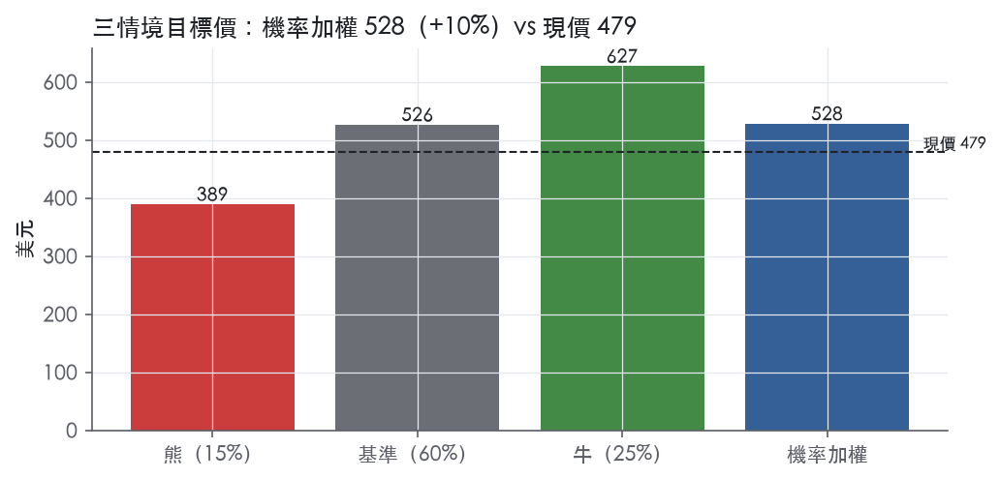
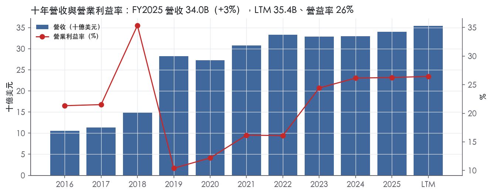
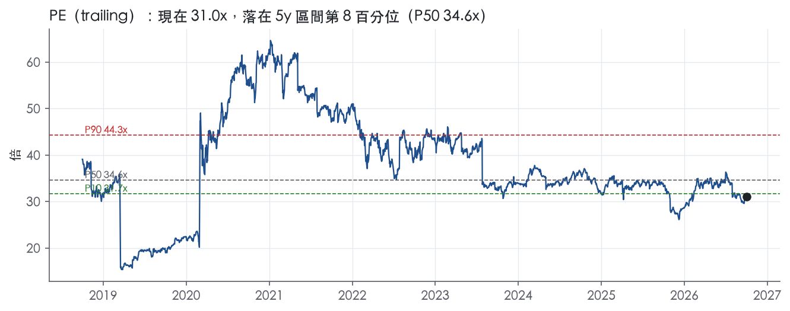
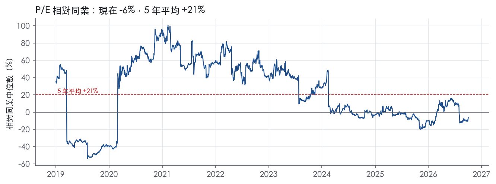
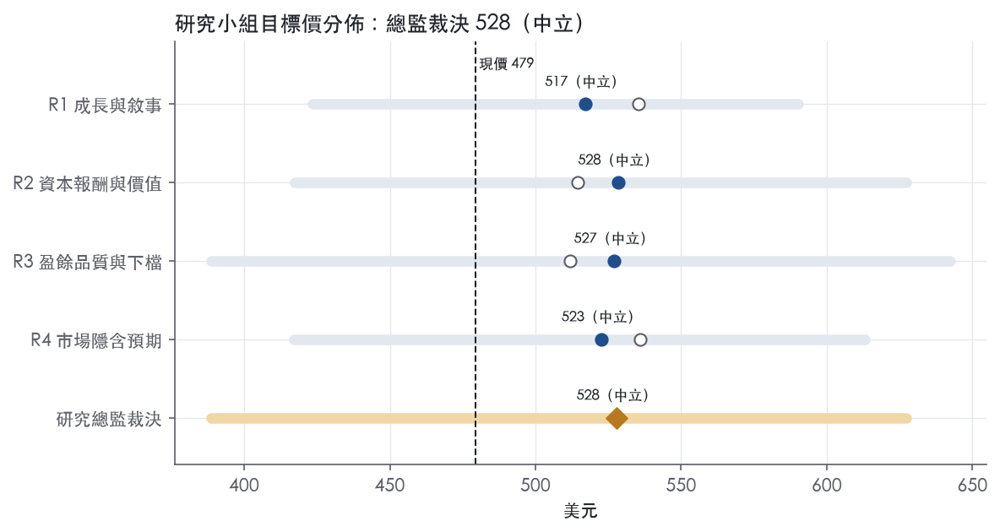
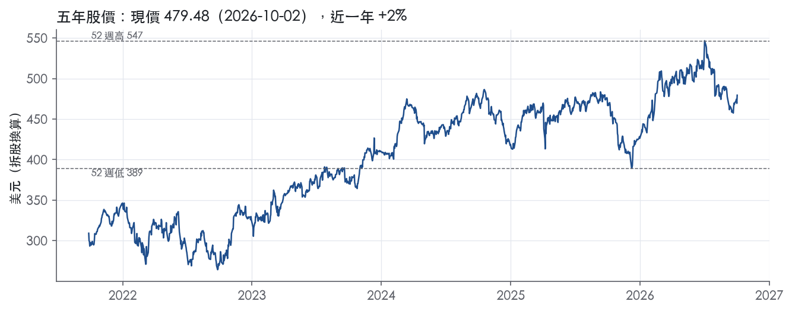

評等總表 › 原物料 › LIN
倍數持平靠盈餘賺一成，中性｜評等 中立｜目標價 528
| 評等 | 中立（邊界，鄰近加碼） |
| 12 個月目標價 | 528 美元 |
| 現價 | 479.48 美元（2026-10-02） |
| 預期報酬 | 股價 +10.1%＋股息 1.3%＝總報酬 +11.4%；同業籃門檻 8.6%，超額 +2.8% |
| 估值方法 | P/E 29.5x，套在第 5–8 季的EPS（也就是一年後的未來四季） |
| 三情境 | 熊 389／基準 526／牛 627 |
| 研究流程 | 四位研究員兩輪辯論＋研究總監裁決 |
| 資料來源 | SEC EDGAR XBRL、Tiingo、FRED（全免費） |
倍數持平靠盈餘賺一成，中性（研究總監裁決，四位研究員兩輪辯論後）
評等 中立（邊界，鄰近加碼）｜12 個月目標價 528 美元（總監三情境機率加權 531 與研究員中位數 525 各半）｜現價 479.48（2026-10-02）
預期報酬：股價 +10.1%＋股息 1.3%＝總報酬 +11.4%。同業籃門檻 8.6%，超額 +2.8%，離加碼的分界不到三個百分點，屬邊界評等（落在其他級距的機率約三成）。
估值方法：P/E 29.5x，套在第 5–8 季的EPS（也就是一年後的未來四季）。三情境：熊 389（15%）／基準 526（60%）／牛 627（25%）。
什麼會讓研究總監改變看法：FY2027 資本支出指引下限低於 5.5B 而 backlog 不縮，或 FY2026 ROIC 升破 13%，倍數上調至 P50 32.4x 轉看多；FY2026Q3 內生成長 ≤2% 且調整後營益率年減 ≥100bp，營益率降到 26.0%、熊機率升到 25% 轉看空。
| 過去四季（實際，FY2026Q2） | 未來四季 | 第 5–8 季 | 第 9–12 季 | |
|---|---|---|---|---|
| 營收（B） | 35.4B | 37.4B | 39.5B | 41.8B |
| 營收成長 | 6.6% | 5.5% | 5.5% | 6.0% |
| 營業利益率 | 26.5% | 26.8% | 26.8% | 26.8% |
| EPS（美元） | 15.46 | 16.63 | 17.84 | 19.22 |
| EPS 成長 | 10.1% | 7.6% | 7.3% | 7.8% |
| 每股股息（美元） | 6.20 | 6.20 | 6.20 | 6.20 |
| P/E（現價） | 31.0x | 28.8x | 26.9x | 24.9x |
| 股息殖利率（現價） | 1.3% | 1.3% | 1.3% | 1.3% |
過去四季為申報數字；預測為研究總監的假設、程式計算。倍數與殖利率都用現價計算，用來看現價對應各期獲利的高低。
| 情境 | 機率（歷史） | 故事 | 未來四季營收成長 | 第 5–8 季營益率 | 倍數 | 目標價 | 股價漲跌 |
|---|---|---|---|---|---|---|---|
| 熊 | 15%（13%） | 風險表第 2 條電子景氣反轉使 backlog 投產遞延，疊加第 1 條能源轉嫁失靈；on-site 最低採購量撐住部分營收但利潤率去槓桿、回購暫停，倍數落到前瞻帶 P10 | 2.0% | 24.5% | 26.0x | 389 | -18.9% |
| 基準 | 60%（62%） | 內生 4–5% 加投產補上匯率退場，GAAP 營益率 26.8% 含年度費用不擴張，回購步調不變，倍數留在前瞻帶 P25 | 5.5% | 26.8% | 29.5x | 526 | 9.8% |
| 牛 | 25%（25%） | 電子長約加速投產、量增站上 3%，FY2026 ROIC 升破 13% 證明新增資本報酬高，倍數回到前瞻帶 P50 附近 | 7.0% | 28.0% | 32.5x | 627 | 30.8% |
目標價由程式依研究總監的驅動與倍數計算；機率由研究總監給定。括號內是歷史頻率：把這檔股票過去十年 12 個月報酬的波動形狀，置中在基準情境，結果落在各情境附近的比例。

四位研究員用不同方法各自估值，回應研究總監的質疑後交出第二輪，最後由總監逐點裁決。各研究員的主張見第七章，裁決理由見第八章，完整論證見《研究底稿》。
| 立場（一輪→二輪） | 加權目標價（一輪→二輪） | 評等（一輪→二輪） | 第二輪倍數 | 熊～牛目標價 | |
|---|---|---|---|---|---|
| R1 成長與敘事 | 看多→中性 | 535→517 | 中立→中立 | 31.0x | 423～590 |
| R2 資本報酬與價值 | 中性→中性 | 514→528 | 中立→中立 | 29.5x | 418～627 |
| R3 盈餘品質與下檔 | 中性→中性 | 512→527 | 中立→中立 | 29.0x | 389～642 |
| R4 市場隱含預期 | 看多→中性 | 536→523 | 中立→中立 | 28.8x | 417～613 |
| 研究總監裁決 | 中性 | 528 | 中立 | 29.5x | 389～627 |
目標價由程式依各自的驅動與倍數計算；評等＝機率加權總報酬 − 同業籃門檻。
Linde plc 是全球最大的工業氣體公司，同時是該產業的主要技術創新者¹。主要產品為大氣氣體（氧氣、氮氣、氬氣與稀有氣體）與製程氣體（氫氣、氦氣、二氧化碳、一氧化碳、電子氣體、特殊氣體與乙炔）¹。公司亦設計並建造生產工業氣體的設備，提供包括烯烴廠、天然氣廠、空分廠、氫氣與合成氣廠在內的各類工廠建設與處理服務¹。客戶涵蓋醫療保健、化學與能源、製造、金屬與礦業、食品飲料及電子等多元產業¹。簡言之，Linde 是一家靠長約鎖定現金流、靠規模與管線網路建立地區性護城河的公用事業型工業氣體龍頭。FY2025 營收 33.99B 美元，較 FY2024 的 33.01B 美元成長 3.0%，屬於低個位數成長但高獲利的穩健生意。
Linde 以三種基本配送模式組織其氣體業務：現場供應（on-site/tonnage）、商業散裝（merchant/bulk liquid）與包裝氣瓶（packaged/cylinder）¹。現場供應針對需求量最大且用量穩定的客戶（通常是氧氣、氮氣、氫氣），合約多為10-20年的全量承購合約並含最低採購量與價格調漲條款¹。商業散裝合約期限通常為三至七年，包裝氣瓶合約則為一至三年或以採購單方式交易¹。除氣體本業外，Linde Engineering 是獨立的工程業務分部，聚焦空分、氫氣、合成氣、烯烴與天然氣廠的設計建造，技術組合涵蓋氫氣全價值鏈（生產、液化、儲存、配送、應用）¹。從最新季度看，Engineering 營收規模遠小於氣體分部：FY2026Q2 為 625M 美元，年增13%，營業利潤率16.0%²；FY2026Q1 為 517M 美元，年減8%，營業利潤率19.5%³。氣體業務依地理劃分為 Americas、APAC、EMEA 三大區域分部，FY2026Q2 營收分別為 4,083M、1,870M、2,303M 美元，營業利潤率分別為31.2%、28.4%、35.7%²；FY2026Q1 對應為4,025M、1,701M、2,171M美元，利潤率31.6%、28.0%、36.1%³。EMEA 利潤率持續最高，顯示歐洲定價力與成本結構優於美洲與亞太。10-K 未揭露各分部占總營收的年度精確比重，僅能由季度數字推估 Americas 約占整體氣體業務最大宗。
Linde 不依賴單一或少數客戶，客戶集中度風險低¹。公司約64%的2025年銷售來自美國以外地區，是真正的全球化企業¹。公司在約50個歐洲、中東與非洲國家（含德國、英國、法國、瑞典、南非）設有多數或全資子公司，在約15個亞洲及南太平洋國家（含中國、澳洲、印度、南韓）及約20個北美與南美國家（含美國、加拿大、墨西哥、巴西）營運¹。配送通路如前述分為現場、商業散裝與包裝氣瓶三種，彼此常共用同一座工廠產出，依客戶用量規模、純度需求、使用型態（氣態或低溫液態）決定最具成本效益的供應方式¹。公司業務大致不受季節性顯著影響¹。地理分散疊加長約結構，是 Linde 現金流穩定性的核心來源。
FY2025Q3（2025-09-30）營收8.62B美元，年增3.1%，EBITDA 3.33B美元，EPS 4.09（按資料包表格列示）。FY2025Q4（2025-12-31，推導）營收8.76B美元，年增5.8%，但營業利潤率降至23.0%，EBITDA回落至2.97B美元，EPS降至3.24，顯示Q4有一次性費用或季節性因素拖累獲利率【判，數字見資料包最近八季表】。
FY2026Q1營收8,781M美元，年增8%，其中有利匯率貢獻5個百分點，內生銷售成長3%（2%價格貢獻+1%量增，主要來自新專案投產）³。營業利潤2,439M美元，調整後營業利潤2,630M美元，年增8%，調整後營業利潤率30.0%，年減10個基點³。EPS 3.98美元，年增13%；調整後EPS 4.33美元，年增10%³。營運現金流2,240M美元，年增4%，資本支出1,342M美元後自由現金流898M美元³。公司對FY2026Q2指引調整後EPS 4.40至4.50美元，年增8%至10%³。
FY2026Q2營收9,289M美元，年增9%，內生銷售成長4%（2%價格+2%量增，主要來自電子、製造與化學能源終端市場）²。營業利潤2,554M美元，調整後營業利潤2,744M美元，年增7%，調整後營業利潤率29.5%²。EPS 4.15美元，年增11%；調整後EPS 4.50美元，年增10%²。營運現金流2,271M美元，年增3%，資本支出1,438M美元後自由現金流833M美元²。CEO Sanjiv Lamba 稱本季「生成創紀錄的銷售與EPS，同時維持業界領先的29.5%營業利潤率與23.5%資本回報率」，並指出簽署另一份美國長期電子氣體供應合約，將氣體銷售在建專案（sale of gas backlog）推升至紀錄的8.1B美元²。公司對FY2026Q3指引調整後EPS 4.45至4.55美元，年增6%至8%，無預期匯率影響；全年調整後EPS指引上修至17.70至17.90美元，年增8%至9%²。全年資本支出指引為5.5B至6.0B美元，以支持成長與維護需求，包括8.1B美元的合約氣體銷售在建專案²。整體看，連三季營收加速（FY2026Q1年增8%、Q2年增9%，較FY2025各季3-6%明顯提速），主因電子市場需求與新簽長約驅動，但調整後營業利潤率略有壓力（Q2較去年同期降60個基點），顯示成本通膨正侵蝕部分定價與生產力提升的成果。
公司將自身定位為「透過提供高品質解決方案、技術與服務，使客戶更成功，並協助永續發展、減碳與保護地球」來實現「讓世界更具生產力」的使命²。管理層明確點名電子（electronics）為當前成長最快的終端市場，Q1與Q2內生銷售成長均主要由電子、製造與化學能源三大終端市場驅動³²。CEO 指出「客戶提案活動持續強勁，主要集中在電子終端市場，使我們有信心進一步擴大在建專案（backlog）」²。10-K 將氫氣技術（低碳藍氫與可再生綠氫）與碳捕捉列為研發重點方向，公司在德國Pullach、紐約Tonawanda、伊利諾Burr Ridge及中國上海設有研發據點，聚焦氣體處理、分離與液化技術，以及潔淨能源與碳管理解決方案¹。公司在管線網路覆蓋地區具備經濟規模優勢，是其對大型客戶的核心競爭力來源¹。
Linde 的成長故事本質是「電子氣體長約+現場供應專案管線」驅動的內生成長，疊加價格轉嫁能力對抗能源通膨，而非倚賴併購擴張。8.1B美元的氣體銷售在建專案與3.0B美元的工程設備在建專案，構成未來2-3年營收能見度的主要支撐。風險在於：調整後營業利潤率近兩季已連續小幅下滑（30.0%→29.5%），若電子景氣或成本通膨持續施壓，獲利率擴張的故事可能放緩。

Linde 的護城河評級為窄，趨勢變寬。優勢主要來自三處：長約帶來的轉換成本、配送半徑造成的效率規模、管線網路帶來的成本優勢，這三項在工業氣體業內屬最扎實的一級。帳面 ROIC 卻只在合併整合完成後的近三年才穩定站上資本成本，而且領先不多，所以我們只有把握 5 年以上，還沒有把握 10 年以上。
轉換成本是最主要的優勢來源。On-site 供應合約一般是全量承購合約，期限通常 10-20 年，並含最低採購量與價格調漲條款¹。Linde 把廠蓋在客戶廠區內或緊鄰處，以管線直接供氣¹。客戶若要換供應商，必須重建供氣設施並承擔停產風險，因此合約期內實際上換不掉。Merchant 業務的客戶端儲槽通常由 Linde 擁有、維護並租給客戶，合約通常三至七年¹。這一塊的綁定比 on-site 弱，但仍有實體設備黏著。
效率規模是第二個來源。受配送成本限制，merchant 氧氣與氮氣的配送半徑相對小¹。三種配送模式常常整合，產品來自同一座工廠¹。一個區域市場只容得下少數有效率的空分廠，後進者若新建產能去搶已被長約鎖住的需求，報酬率會很難看。
成本優勢來自管線網路與規模。在擁有管線網路的地區，Linde 能為大型客戶提供可靠且經濟的供應，並因此取得競爭優勢¹。Linde 是全球最大的工業氣體公司¹。能源是最大的單一成本項，公司透過定價公式、附加費、成本轉嫁與代工安排，在合約層面化解電力與天然氣價格波動¹。這讓規模帶來的成本優勢不會被能源價格吃掉。
無形資產不列為來源。Linde 擁有大量專利，但公司明言整體業務並不重大依賴任何單一專利、專利授權或專利家族¹。"Linde" 是最重要的商標¹，但工業氣體是規格化商品，品牌溢價有限。網路效應沒有證據，不列。
數字只部分支持護城河主張，而且衝突明顯。十年平均 ROIC 為 8.6%，低於資本成本代理值 10.2%，ROIC 平均減資本成本為 -1.6%。ROIC 有資料的 8 年中只有 4 年高於資本成本。營業利益率標準差 7.1%，最低 10.4%、最高 35.4%，不是寬護城河該有的平穩曲線。
我們沒有因此把評級降為「無」，理由有三。
同一組數字也是我們把評級壓在「窄」的原因。近三年 ROIC 高於資本成本的幅度不大，而資本成本代理值本身被 10 年期公債 5.24%推高。若利率維持高檔，或新增資本支出的報酬遞減，這段領先很容易被抹平。要升到「寬」，我們需要看到 ROIC 在 FY2026–FY2027 持續站在資本成本之上並拉開差距。
最大威脅是資本密集度上升而報酬沒有跟上。資本支出/營收由 FY2022 的 9.5% 升至 FY2025 的 15.5%。同期 FCF 由 5.69B 美元降至 5.09B 美元。
客戶自建是第二個威脅。國際氣體市場有相當大一部分屬於客戶自有工廠¹。Linde 推廣 VPSA 與薄膜分離技術讓客戶現場製氧製氮¹，同類技術普及也會降低客戶自建的門檻。
競爭壓力始終存在。Linde 所處的工業氣體與工程市場高度競爭，本地、區域與全球業者都在施加競爭壓力¹。主要對手包括 L’Air Liquide、Air Products、Messer 與 Taiyo Nippon Sanso¹。
能源風險無法完全轉嫁。能源的可得性與價格難以預測，可能構成未來風險¹。Packaged gases 多為一至三年合約或採購單交易¹，短約的轉嫁保護弱於 on-site 長約。低碳氫與綠氫專案還沒有長期報酬紀錄，若大型專案以較薄的報酬簽約，會稀釋整體 ROIC。
目標倍數應相對工業氣體同業給予小幅溢價，但溢價只能算 5 年左右，不支持永續高溢價。理由是長約與效率規模讓現金流可見度優於同業，但 ROIC 高於資本成本的紀錄只有三年、幅度也不大。目前 P/E 31.0x 已低於自身 5 年 P10 的 31.7x，EV/EBITDA 18.6x 則接近 5 年 P50 的 19.0x，建議以 EV/EBITDA 中位數作為錨點，不要回推到 P/E 的歷史高位。
| 指標 | 最新 | 十年平均 | 標準差 | 最低 | 最高 |
|---|---|---|---|---|---|
| ROIC | 12.0% | 8.6% | 3.4% | 3.5% | 12.1% |
| 營業利益率 | 26.3% | 21.0% | 7.1% | 10.4% | 35.4% |
| FCF 利潤率 | 15.0% | 14.8% | 3.3% | 8.6% | 21.6% |
| ROE | 18.1% | 12.8% | 5.7% | 4.5% | 21.8% |
程式計算。資本成本代理值（10 年債＋5%）：10.2%；ROIC 平均減資本成本：-1.6%；ROIC 有資料的 8 年中，高於資本成本 4 年。
營業現金流對淨利比 LTM 1.45x、近三年平均 1.48x、十年平均 1.99x，三個口徑都在綠燈區。自由現金流對淨利比 LTM 0.69x、近三年 0.79x，低於 0.90x 門檻亮黃燈，但應計比率 LTM -3.7%、十年平均 -4.1%，持續為負值代表盈餘並非靠應計堆出來，而是資本支出吃掉了現金轉換率。FY2025 資本支出對營收比達 15.5%（資料包），高於十年均值，10-K 說明資本支出 5,261M 美元主要投入新廠產能以支應在建的大型項目⁴，在建項目的總估計資本成本約 7.3B 美元⁴。這是成長性資本支出而非維運黑洞，FCF 轉換偏弱屬於可解釋的周期性現象，不是盈餘品質真問題。FY2025 應收帳款成長減營收成長 +4.5pp、存貨成長減營收成長 +2.6pp，都在綠燈區，營運資金沒有吃掉盈餘。
FY2025 reported營業利益 8,923M 美元、調整後營業利益 10,137M 美元，差距主要是Linde AG併購的購買會計影響 941M 美元與成本精簡及其他費用 273M 美元⁴。購買會計影響連續兩年金額接近（2024年為940M美元）⁴，屬於併購攤銷性質的非現金項目，本質是真實的無形資產攤銷成本，只是被公司視為非經常性而加回，分析時應保留在GAAP數字中看待。成本精簡費用內含全球資遣費 308M 美元，主要與工程部門相關⁴，這屬於真實現金支出，雖貼標籤為一次性，但近三年持續出現（2024年165M美元、2023年亦有），顯示公司持續在進行組織調整，不宜完全視為非經常性。淨利調整後為7,772M美元對比GAAP 6,898M美元，調整後EPS 16.46美元對比GAAP 14.61美元⁴，差距主要來自上述購買會計與重組費用加回。SBC對營收比僅0.4%～0.5%，公司並未将其作為非GAAP調整項目的主要來源，影響極小。
淨負債對EBITDA LTM 1.75x、近三年平均1.44x，LTM略高於1.50x門檻亮黃燈，但十年平均1.52x顯示目前槓桿僅略高於歷史常態，非結構性惡化。利息保障倍數LTM 37.4x、十年平均27.7x均遠高於8.0x綠燈門檻，付息能力無虞。FY2025淨負債較FY2024的16.77B美元增至21.93B美元（資料包），現金流量表顯示當年度債務淨增加2,911M美元，主要用於融資4,578M美元的股份淨回購與2,811M美元的股利發放⁴。（股利＋回購）對淨利比LTM為95.7%、近三年平均106.7%、十年平均124.3%，均在綠燈區但比例偏高，顯示公司長期以舉債支應部分股東回饋。稀釋股數年變動LTM為-0.4%，近三年平均-2.2%，持續透過回購縮減股數。
紅旗一：FY2017→FY2018淨利率跳動+19個百分點——屬一次性/會計口徑因素，非持續性盈餘品質問題。10-K原文顯示FY2018營收較FY2017成長30.6%且營益率由21.5%跳升至35.4%（資料包），同期間Linde AG與Praxair合併案於2018年完成，大幅改變合併報表基礎與資產結構，此為結構性跳變而非營運體質突變。此段跳動發生在十年表最前段，與公司現況盈餘品質評估關聯性低。
紅旗二：FY2018→FY2019淨利率跳動-21個百分點——同樣屬於合併後過渡期的會計現象，可解釋。FY2019營收自FY2018的14.84B美元躍升至28.23B美元、成長90.3%（資料包），淨利率由35.4%驟降至10.4%，對應的是Linde AG與Praxair合併案完整年度並表後，購買會計攤銷與整合費用大幅認列，使當年度營益率基期大幅稀釋。這與公司近年持續揭露的「merger-related purchase accounting impacts」一致，10-K仍在FY2025逐年認列941M美元的併購購買會計影響⁴，顯示此為合併會計的長尾效應而非盈餘造假或現金斷鏈。
黃燈一：自由現金流／淨利 LTM 0.69x——如前段「現金有沒有跟上盈餘」所述，主因是資本支出對營收比持續走高至15.5%（資料包）以支應7.3B美元在建項目與長約新單（最新一季積壓已升至8.1B美元）²，屬於成長性資本支出而非盈餘品質惡化，可解釋。
黃燈二：淨負債／EBITDA LTM 1.75x——略高於1.50x門檻，但近三年平均1.44x、十年平均1.52x顯示波動在歷史區間內，且利息保障倍數高達37.4x，槓桿尚未對財務彈性構成實質限制，屬可接受的周期性上升。
估值應以GAAP淨利與EPS為盈餘品質評估基礎，但認可購買會計攤銷941M美元屬非現金、非持續性項目，可在估值模型中單獨揭露而非直接採信調整後EPS 16.46美元作為核心盈餘。重組費用（FY2025為308M美元資遣）雖列為非經常性，但近三年重複出現，估值時建議對「調整後」盈餘打小幅折扣以反映持續性重組成本。槓桿（淨負債/EBITDA 1.75x）與利息保障（37.4x）均未達限制估值倍數的門檻，現有EV/EBITDA 18.5x可視為槓桿中性下的合理定價基礎，不需因資產負債表因素額外打折。
| 項目 | LTM | 近三年 | 十年 | 燈號 | 規則 |
|---|---|---|---|---|---|
| 營業現金流／淨利 | 1.45x | 1.48x | 1.99x | 綠 | ≥1.00x 綠、<0.80x 紅 |
| 自由現金流／淨利 | 0.69x | 0.79x | 1.08x | 黃 | ≥0.90x 綠、<0.60x 紅 |
| 應計比率（(淨利−CFO)／平均總資產） | -3.7% | -3.9% | -4.1% | 綠 | ≤0.0% 綠、>5.0% 紅 |
| SBC／營收 | 0.4% | 0.5% | 0.4% | 綠 | ≤3.0% 綠、>8.0% 紅 |
| 淨負債／EBITDA | 1.75x | 1.44x | 1.52x | 黃 | ≤1.50x 綠、>3.00x 紅 |
| 利息保障倍數（營業利益／利息） | 37.4x | 36.3x | 27.7x | 綠 | ≥8.00x 綠、<3.00x 紅 |
| 稀釋股數年變動 | -0.4% | -2.2% | 7.2% | 綠 | ≤0.0% 綠、>3.0% 紅 |
| （股利＋回購）／淨利 | 95.7% | 106.7% | 124.3% | 綠 | ≥50.0% 綠、<0.0% 紅 |
| 應收帳款成長 − 營收成長（FY2025） | +4.5pp | — | — | 綠 | ≤5pp 綠、>15pp 紅 |
| 存貨成長 − 營收成長（FY2025） | +2.6pp | — | — | 綠 | ≤5pp 綠、>15pp 紅 |
程式計算；燈號以 LTM（無則近三年平均）判定。
| 風險 | 觸發指標（看什麼數字、在哪裡看） | 對 EPS 的影響方向與粗略幅度 | 未來 12 個月發生機率（高／中／低） | 出處 |
|---|---|---|---|---|
| 能源與原料成本轉嫁失靈，侵蝕營益率 | 季度調整後營業利潤率年增/年減（8-K每季揭露）；FY2026Q2已從30.0%降至29.5%，年減60個基點 | 負向，中；若轉嫁失效，營益率續降60-100bp即可拖累EPS年增個位數 | 中 | ²＋ |
| 電子終端景氣反轉，拖累內生銷售成長與8.1B美元在建專案兌現 | 季度內生銷售成長率（8-K）、氣體銷售backlog金額（8-K）；目前backlog創紀錄8.1B美元，FY2026Q1/Q2內生成長均由電子終端驅動 | 負向，大；電子占近兩季成長引擎最大宗，若熄火內生成長可能由4%降至1-2% | 中 | ²³ |
| 商譽減損風險（28B美元商譽+2B美元其他無形資產，源自2018年合併） | 季度財報是否出現減損charge；市值是否持續跌破帳面權益；10-K揭露的商譽淨額 | 負向，大（一次性非現金但衝擊GAAP EPS） | 低 | 10-K 年報 FY2025 Item 1A（風險因素） |
| 匯率波動侵蝕海外營收（64%銷售來自美國以外） | 美元指數走勢、季度財報中「currency impact」揭露的百分點（8-K每季均列示） | 方向不定，中；FY2026Q2匯率貢獻+2%營收，反轉時即轉負 | 中 | ＋² |
| 景氣循環客戶（化學能源、金屬礦業）需求下滑導致產能利用率降低、應收帳款減損 | 化學能源/金屬礦業終端市場在季度8-K中的量增/量減描述；客戶應收帳款壞帳費用（財報附註） | 負向，中 | 低 | 10-K 年報 FY2025 Item 1A（風險因素） |
能源成本轉嫁失靈是目前最需要盯的風險，因為它已經在發生而非假設性。10-K明確寫「Energy is the single largest cost item in the production and distribution of industrial gases」，且大型合約雖有escalation與pass-through條款，但「such attempts may not successfully mitigate cost variability」⁵。對照最新季報，FY2026Q2調整後營業利潤率27.5%／29.5%已較去年同期降60個基點，管理層自己承認是「cost inflation」抵銷了價格與生產力提升²。這不是單季雜訊——FY2025Q4營業利潤率也曾降到23.0%（資料包最近八季表），顯示成本端壓力有週期性復發跡象。監測方法很簡單：每季看adjusted operating margin年增/年減方向，連續兩季擴大惡化就是訊號。
電子終端景氣反轉是對成長故事殺傷力最大的風險。公司過去兩季的內生銷售成長（Q1的3%、Q2的4%）都點名電子終端是主要貢獻者，CEO也直言backlog成長信心「primarily across the electronics end market」²。半導體/電子景氣循環性強，一旦資本支出放緩，8.1B美元的sale of gas backlog兌現速度會變慢，直接打到營收成長率與EPS指引（目前全年指引17.70-17.90美元，年增8-9%）²。10-K風險因子雖未點名電子產業，但在「weakening economic conditions」一條中已涵蓋客戶產業週期性風險⁵。
商譽減損是財報上明確存在的尾部風險。10-K揭露「net carrying value of goodwill and other indefinite-lived intangible assets was approximately $28 billion and $2 billion」，主因2018年Linde/Praxair合併的收購會計⁵。公司列出的減損觸發條件包括「sustained market capitalization declines」，而目前股價479.48美元距52週高點546.64已有一定距離，雖未到減損臨界，但這是監測清單上該放的一項。機率設為低，因為目前獲利仍創紀錄（Q2 EPS 4.15美元創紀錄），尚無減損跡象²。
匯率風險是雙面刃但方向不穩定。10-K指出「a significant portion of Linde's revenue is denominated in currencies other than its reporting currency, the U.S. dollar」⁵，業務概況章也確認64%銷售來自美國以外¹。近兩季匯率剛好是順風（Q1、Q2均為favorable currency），但全年指引假設「favorable currency of 1%」，若美元轉強這個順風會消失甚至反轉²，屬於方向不確定但確定會波動的風險。
景氣循環客戶需求下滑是10-K原文直接點名的風險，「many of Linde's customers are in businesses that are cyclical in nature, such as the chemicals and energy, and metals and mining end markets」⁵。目前EMEA區域manufacturing終端已出現「lower volumes」（FY2026Q2）²，是早期訊號但尚未擴散到化學能源與金屬礦業兩大循環產業，機率判定為低。
淨負債持續攀升但現金部位波動大：淨負債從FY2021的11.38B美元一路升至FY2025的21.93B美元，最新快照23.11B美元，而FY2026Q1單季現金從Q4的5.06B美元驟降至3.96B美元（資料包最近八季表）。10-K只泛泛提及「macroeconomic factors may impact Linde's ability to obtain financing」，未具體量化槓桿趨勢。在ust10y已達5.24%的高利率環境下，持續擴大的淨負債規模會推升利息費用對EPS的隱性侵蝕，值得獨立監測每季淨負債/EBITDA變化。
資本支出指引大幅上修但自由現金流殖利率已偏低：FY2026全年資本支出指引5.5-6.0B美元（含8.1B美元backlog執行），而trailing FCF殖利率僅2.3%，且P/FCF倍數78.5%分位數已處於5年區間高檔。10-K風險因子完全未提及資本支出強度與FCF轉換率下滑的風險，但若backlog專案執行期拉長或投報率不如預期，自由現金流對股東回報（含1,590M美元單季股利加回購）的支撐力會變薄弱，這是股價評價層面的隱性風險，公司10-K未觸及。
現價 479.48 對應 trailing（過去四季）P/E 31.0x、EV/EBITDA 18.5x、EV/EBITA —、EV/Sales 6.9x、FCF 殖利率 2.3%。主要估值倍數 P/E 現在 31.0x，落在5 年區間第 8 百分位（P10／P50／P90 = 31.7x／34.6x／44.3x）。

把程式的機械基準預測放到現價下，市場付的前瞻倍數是：P/E（未來四季） 28.8x、P/E（第 5–8 季） 26.6x。反推 DCF 顯示市價隱含未來五年營收年成長 19.9%（WACC 9.0%、終值成長 3.0%、FCF 利潤率 15.7%，SBC 不加回）。
| 倍數 | 現在 | 5 年 P10 | 5 年 P50 | 5 年 P90 | 現在分位 | 全期 P50 |
|---|---|---|---|---|---|---|
| P/E | 31.0x | 31.7x | 34.6x | 44.3x | 7.6% | 35.1x |
| EV/EBITDA | 18.6x | 17.1x | 19.0x | 20.2x | 35.9% | 18.8x |
| EV/EBITA | 29.5x | — | — | — | — | 29.6x |
| EV/EBIT | 26.2x | 26.3x | 28.5x | 36.0x | 9.1% | 29.0x |
| EV/Sales | 6.9x | 5.2x | 6.7x | 7.5x | 59.6% | 6.1x |
| P/S | 6.3x | 4.8x | 6.2x | 6.9x | 55.3% | 5.6x |
| P/FCF | 44.8x | 23.3x | 39.4x | 46.1x | 78.5% | 38.5x |
trailing 倍數（股價 ÷ 過去四季）；分位以每個交易日計算。
同業籃：APD, DD, ECL, SHW, PPG（手動名單（playbooks/peers.yaml））。評等門檻 8.6%：同業「倍數不變下持有一年」的隱含報酬中位數（＝ FCF 殖利率 ×(1＋g)＋g，g 為 5 年營收年複合成長並夾在 −2%～8%），每家夾在 0～15%、P/E 低於 5 倍視為資料可疑而排除，中位數再限制在 10 年債到 10 年債＋5% 之間；排除：APD（隱含報酬算不出來）。
| 代號 | 市值 | 5 年營收 CAGR | 營益率 | ROIC | P/E | 5 年 P/E 中位數 | EV/EBITDA | P/FCF | 隱含報酬 |
|---|---|---|---|---|---|---|---|---|---|
| LIN | 221.0B | 4.5% | 26.5% | 12.0% | 31.0x | 34.6x | 18.5x | 44.4x | 6.9% |
| APD | 61.8B | 6.3% | -4.7% | -4.8% | — | 27.3x | 64.9x | — | — |
| DD | 17.8B | -19.6% | 6.7% | 0.5% | 288.8x | — | 21.1x | 25.3x | 1.9% |
| ECL | 76.7B | 6.4% | 16.9% | 13.9% | 36.8x | 40.9x | 21.8x | 40.9x | 9.0% |
| SHW | 77.6B | 5.1% | 14.3% | 17.8% | 29.5x | 33.3x | 21.2x | 24.1x | 9.5% |
| PPG | 23.4B | 2.8% | 15.6% | 13.1% | 15.0x | 24.0x | 9.5x | 19.1x | 8.2% |
| 同業中位數 | 5.1% | 14.3% | 13.1% | 33.1x | 30.3x | 21.2x | 24.7x | 8.6% |
全部 trailing，程式以各公司 SEC XBRL 與 Tiingo 行情計算；第一列為本檔。
P/E 相對同業中位數：現在 -6.4%，過去 1 年平均 -2.8%、3 年 2.2%、5 年 20.6%；EV/EBITDA 相對同業中位數：現在 -13.1%，過去 1 年平均 -17.0%、3 年 -2.3%、5 年 -0.8%。

事後實現前瞻倍數帶（P/E，2018-10-01..2025-08-13）：P10／P50／P90 = 26.3x／32.4x／44.0x。它是每個交易日的股價除以之後四季實際實現的指標；一年後，今天的第 5–8 季正是那時的未來四季，所以這條帶是 12 個月目標價的同口徑倍數。因為用的是事後實際而非當時預期，過去成長超乎預期的公司這條帶會偏低。
程式的機械基準（成長率從過去四季年增率三年收斂到 6%、利潤率持平）用 事後實現前瞻 P/E P50 估值得到 585（22.0%），市場現行前瞻倍數（現價 ÷ 基準 未來四季指標）一年後持平，套在基準 第 5–8 季指標得到 520。這兩個數字只是參考點，不是本報告的目標價；研究員對這個定價的回應在第七章。
下表是每位研究員第一輪（各自獨立）與第二輪（回應研究總監的質疑後）的結果。目標價全由程式依各自的假設計算。
| 立場（一輪→二輪） | 加權目標價（一輪→二輪） | 評等（一輪→二輪） | 第二輪倍數 | 熊～牛目標價 | |
|---|---|---|---|---|---|
| R1 成長與敘事 | 看多→中性 | 535→517 | 中立→中立 | 31.0x | 423～590 |
| R2 資本報酬與價值 | 中性→中性 | 514→528 | 中立→中立 | 29.5x | 418～627 |
| R3 盈餘品質與下檔 | 中性→中性 | 512→527 | 中立→中立 | 29.0x | 389～642 |
| R4 市場隱含預期 | 看多→中性 | 536→523 | 中立→中立 | 28.8x | 417～613 |
| 研究總監裁決 | 中性 | 528 | 中立 | 29.5x | 389～627 |
目標價由程式依各自的驅動與倍數計算；評等＝機率加權總報酬 − 同業籃門檻。
分歧度：第一輪 加權目標價 512～536（區間＝現價的 5%）· 倍數 29～32x · 立場 看多×2、中性×2；第二輪 加權目標價 517～528（區間＝現價的 2%）· 倍數 28.8～31x · 立場 中性×4（方向一致）。

| 研究員 | 第二輪主張 | 堅持的理由 |
|---|---|---|
| R1 成長與敘事 | 中性，目標倍數31倍，以現行本益比一年後持平為錨。 | 在建專案一季內從7.1B升到8.1B，第二年營收成長維持6.5%。 |
| R2 資本報酬與價值 | 中性，目標倍數29.5倍，同業倍數一起下移，不追回舊溢價。 | 整合後投入資本報酬率三年持平，倍數不往32.4倍靠。 |
| R3 盈餘品質與下檔 | 中性，目標倍數29倍，盈餘是真的，但利潤率已無擴張空間。 | 能源成本轉嫁可能失靈，熊情境營益率壓到24.5%不放寬。 |
| R4 市場隱含預期 | 中性，目標倍數28.8倍，等於市場現行前瞻倍數持平。 | 市場押資本支出會回落，指引5.5–6.0B不降前不給溢價。 |
每位研究員的逐條回應與完整論證見《研究底稿》（LIN_研究底稿_2026-10-05.docx）。
| 分歧點 | R1 | R2 | R3 | R4 | 什麼資料會分出勝負 |
|---|---|---|---|---|---|
| 目標倍數 | 31x eps@ntm，trailing 持平 | 29.5x eps@q5_q8，前瞻帶 P25 | 29x eps@q5_q8，P25 下緣 | 28.8x eps@q5_q8，市場持平 | 乾淨同業 P/E 是否回升；FY2027 資本支出指引（2027-02）是否低於 5.5B 而 backlog 不縮 |
| 營益率 y1–y3 | 26.8%：H1 run-rate 扣費用與通膨 | 27.0% | 27.0%，含約 200M 費用 | 26.5%：年度 GAAP 才乾淨 | FY2026Q3 8-K GAAP 營益率；FY2026 10-K Item 7 全年費用對 165M／273M |
| 營收 y1／y2 | 5.5／6.5%：backlog 7.1→8.1B | 5.0／5.5% | 4.5／5.0%：扣匯率、三年皆低於 6% | 5.5／5.5%：Q3 指引匯率為零 | Q3/Q4 內生成長與量增拆分；Q4 8-K backlog 與投產時程 |
| 熊情境與機率 | 423、22%（歷史 28%） | 418、22%（22%） | 389、10%（16%）：風險表 1＋2 | 417、17%（27%） | Q3/Q4 調整後營益率年減是否 ≥100bp；電子評論與 backlog 是否縮 |
| 股數變動 | −1.2% | −1.5% | −1.5% | −1.9%（基準） | FY2026 10-K 回購金額與淨負債變動 |
目標倍數：選 R2，29.5x eps@q5_q8。 四人的錨全在前瞻帶 P10–P25 與市場持平 28.8x 之間，實質分歧是要不要給高於市場持平的小幅溢價。R2 的 P25 只比市場持平高 2%（程式檢查表）；理由是事後實現帶在成長期的位置本來偏低（R4 也承認），而量能正在加速：backlog 創紀錄 8.1B、APAC 量增 6%²。R4 不給溢價靠的是 P/FCF 44.8x 遠高於同業 24.7x（同業比較表），但財務體質章已判定 FCF 轉換 0.69x 來自成長性資本支出，backlog 是有合約的在建專案，用它壓倍數等於把已簽約的成長當負面。R1 的 31x 是 trailing 持平套 ntm，但劇本主尺是 q5_q8，且他已承認降評是類股性的，沒理由把 LIN 留在自家 5y P10 31.7x以下。R3 與 R2 只差 0.5x，他「帶上半部被購買會計灌高」的觀察我採納為不取 P50 的理由，但不支持再往下壓。不取 P50 32.4x 的理由都是個股因素：帶上半部來自 EPS 4.19／4.71／7.33（FY2020、FY2021）被攤銷壓低的年份；資本支出／營收 15.5% 是十年最高；乾淨同業全低於自家 5 年中位數，LIN 過去 5 年平均 20.6% 的溢價已消失。10 年債 5.24%不在理由內；R3 第一輪的利率論點已撤回，第二輪沒有人用利率壓倍數。
營益率：選 R1，26.8% 三年持平。 決定性證據是年度與季度的落差：年度 GAAP 營益率 FY2024 26.2%、FY2025 26.3%（FY2025），而 FY2025 前三季與 FY2026 上半年都在 26.9%～27.8%（最近八季表），落差集中在 FY2025Q4 的 23.0%，當年成本精簡及其他費用 273M⁴。R4 的 26.5% 等於假設這一季整季重演，但 FY2024Q4 是 27.4%、當年費用只有 165M，23.0% 是八季最低點。R2／R3 的 27.0% 則沒留出管理層自己點名的成本通膨：Q2 調整後營益率年減 60bp²。R1 的 26.8% 同時保留一筆介於 165M 與 273M 的年度費用與通膨侵蝕，且三年不擴張——資本支出 16% 高於 D&A 10.8%，新廠折舊會吃掉投產槓桿；R3「折舊與最低採購量營收同步開始」只能說明不惡化，不能說明擴張。
營收 y1／y2：選 R4，5.5%／5.5%，y3 沿用 6.0%。 四人都同意扣匯率：Q1 +8% 含 5 個百分點匯率、Q2 +9% 含 2% 匯率與 1% 併購，內生 3%／4%，Q3 指引匯率為零³,²。分歧在 y2：R1 的 6.5% 高於機械基準 6.2%，依據是 backlog 一季內 7.1B→8.1B；但 backlog 是在建專案口徑，分年投產時程未揭露（他自列為缺資料），FY2023–25 成長 −1.5%／0.5%／3.0%（–FY2025）、5 年 CAGR 4.5%，近兩季整體量增只有 1%、2%，6.5% 等於押注投產全落在 Q5–Q8。R3 的 4.5%／5.0% 漏掉 Q2 已出現的 1% 併購與量增加速。R4 的 5.5% 讓投產剛好補上匯率退場的缺口，是資料能支持的上限。
熊情境與機率：情境選 R3，機率依歷史取 15%，不採他的 10%。 R3 是唯一讓風險表第 1 條（能源轉嫁失靈，中）與第 2 條（電子反轉，中）同時發生、以 on-site 最低採購量撐住營收而讓利潤率去槓桿到 24.5%（FY2023 GAAP 24.4% 有先例）、倍數落到前瞻帶 P10 的版本，機制完整。R2 的熊無風險表可對；R4 把熊倍數壓到 P10 以下靠商譽減損「自我強化」，但減損是非現金一次性項目（風險表第 3 條，低），不是利潤率機制。程式對 R3 同一熊情境算出歷史 16%，他給 10% 沒有說明。
股數變動：選 R2／R3，−1.5%。 LTM −0.4%、近三年 −2.2%，FY2025 淨回購 4,578M 加股利 2,811M 靠債務淨增 2,911M 支應⁴，淨負債／EBITDA 1.75x（財務體質章）。基準 −1.9% 要求回購回到三年上限，R1 的 −1.2% 假設明顯減速，但 Q2 仍返還 1,590M²，現行步調介於兩者之間。
退回的第二輪漂移： 程式無旗標，四人每條接受都附證據；R1 靠攏 88% 我逐條看過，五項都是對我意見的直接回應，不退。只擱置 R4 的機率 27／56／17：它依第一輪情境距離對照，基準從 547 降到 511 後沒重算，程式重算為 24／49／27，熊 17% 對歷史 27% 正好碰到 10 個百分點門檻、順序也反，他又自承無公司特有證據；他的驅動與倍數仍按內容評價。R3 的熊機率 10% 對程式 16%，他明寫由程式算，我以 16% 看待。
與機械基準不同的驅動（皆為假設）：
目標倍數 29.5x eps、期間 q5_q8，錨在事後實現前瞻 P/E 帶 P25（29.5x），與同口徑的市場持平 28.8x 相比只高 2%，低於 P50 32.4x 的理由見上。相對同業：剔除 DD 與無值的 APD 後，乾淨同業中位數是 SHW 的 29.5x（trailing），LIN 現行 31.0x 是小幅溢價，符合護城河章「窄、趨勢變寬、只給小幅溢價」；不假設追回過去 5 年平均 20.6% 的溢價。R2 已指出這個倍數隱含的 EV/EBITDA（Q5–Q8）相對 5 年 P50 19.0x小幅折價，精確值由程式列出。
牛 25% 高於熊 15%，順序與歷史一致，兩邊與歷史頻率的差距都在 10 個百分點內，未套慣例。本部過去 22 份報告全部熊高於牛，這份不延續：LIN 置中分布 P25 −10%／P75 +9% 近乎對稱，熊情境又需要兩條「中」機率風險同時兌現，聯合機率只能低於單條。
市場對機械基準付的前瞻 P/E 是 NTM 28.8x、Q5–Q8 26.6x；反推 DCF 在 15.7% FCF 利潤率下隱含 5 年營收成長 19.9%，遠高於 5 年 CAGR 4.5%，只有市場默認資本支出會回落才說得通——市場押的是現金線，不是盈餘（採 R4 的觀察）。我們與現價的差距很小：盈餘比機械基準保守（成長 5.5% 對 6.4%、營益率不擴張），倍數只比市場持平高 2%，總報酬約等於一年的 EPS 成長加股利；以 R2 的基準為參照，程式算出總報酬 11.5%、超額 +2.9%，對門檻 8.6% 不足以看多，立場中性與評等中立一致。不看多，是 P/FCF 44.8x（5 年 78.5% 分位）與舉債回購在 FY2027 資本支出指引出來前封住重估；不看空，是 8.1B 有合約的 backlog 與 on-site 最低採購量給了營收能見度，熊情境要兩條中機率風險同時發生。
現價 479.48 → 點估目標價 526 → 機率加權目標價 531 → 目標價 528，差距拆成五段：成長順延 +40 美元（市場現行倍數 28.8x 一年後持平、獲利照機械基準）；倍數差 +12 美元（總監倍數 29.5x vs 市場持平倍數 28.8x，同一機械基準預測）；盈餘差 -6 美元（總監預測的第 5–8 季EPS 0.0B vs 機械基準 0.0B，同一倍數）；情境不對稱 +5 美元（機率加權減點估）；研究小組平均 -3 美元（總監機率加權 531 與研究員第二輪中位數 525 各半）。各段相加等於目標價減現價。本階段未接賣方共識，差距以市場隱含預期為對照。
| 驅動 | 機械基準 | 研究總監 | 差異 |
|---|---|---|---|
| 未來四季營收成長 | 6.4% | 5.5% | -0.9 pp |
| 第 5–8 季營收成長 | 6.2% | 5.5% | -0.7 pp |
| 第 9–12 季營收成長 | 6.0% | 6.0% | ＝ |
| 未來四季營益率 | 26.5% | 26.8% | +0.4 pp |
| 第 5–8 季營益率 | 26.5% | 26.8% | +0.4 pp |
| 第 9–12 季營益率 | 26.5% | 26.8% | +0.4 pp |
| D&A／營收 | 10.8% | 10.8% | ＝ |
| 資本支出／營收 | 15.6% | 16.0% | +0.5 pp |
| SBC／營收 | 0.4% | 0.4% | ＝ |
| 稅率 | 22.7% | 22.7% | ＝ |
| 股數年變動 | -1.9% | -1.5% | +0.4 pp |
研究總監只寫偏移，未寫的沿用基準。
| 期 | 營收 | 成長 | 營益率 | 營業利益 | EBITDA | EBITA | 淨利 | EPS | FCF | 期末淨負債 |
|---|---|---|---|---|---|---|---|---|---|---|
| 未來四季 | 37.4B | 5.5% | 26.8% | 10.0B | 14.1B | 10.0B | 7.6B | 16.63 | 5.7B | 24.3B |
| 第 5–8 季 | 39.5B | 5.5% | 26.8% | 10.6B | 14.8B | 10.6B | 8.0B | 17.84 | 6.1B | 25.2B |
| 第 9–12 季 | 41.8B | 6.0% | 26.8% | 11.2B | 15.7B | 11.2B | 8.5B | 19.22 | 6.4B | 25.7B |
程式依上表的驅動計算；季度用最近四季季節性分攤；不含營運資金變動。
估值方法：P/E 29.5x，套在第 5–8 季的EPS（也就是一年後的未來四季）。研究總監目標倍數的錨：事後實現前瞻 P/E 帶 P25（29.5x），僅高於市場持平 28.8x 2%；不取 P50 32.4x 因帶上半部受 2019–21 購買會計壓低 EPS 灌高、資本密度十年最高、乾淨同業同步降評不追回 5 年溢價。
計算：EPS（第 5–8 季） 17.84 × 29.5x → 點估目標價 526（9.8%）；隱含 P/E（未來四季）31.6x、P/E（第 5–8 季）29.5x、EV/EBITDA（第 5–8 季）17.5x、FCF 殖利率（第 5–8 季）2.6%。
總監三情境機率加權目標價 531，研究員第二輪中位數 525，兩者各半＝目標價 528；預期報酬 股價 +10.1%＋股息 1.3%＝總報酬 +11.4%；減評等門檻 8.6%（同業籃隱含報酬中位數（APD, DD, ECL, SHW, PPG））＝超額報酬 +2.8% → 評等 中立（超額 >+15% 買進、+5～+15% 加碼、±5% 中立、−5～−15% 減碼、<−15% 賣出）。同一份資料重開研究小組，超額約有正負四個百分點的雜訊（一個標準差，二十檔實測）；以此估計，評等落在其他級距的機率約三成。超額離加碼的分界不到三個百分點，應視為邊界評等。
| 情境 | 機率 | 未來四季成長 | 第 5–8 季成長 | 第 5–8 季營益率 | EPS（第 5–8 季） | 倍數 | 目標價 |
|---|---|---|---|---|---|---|---|
| 熊 | 15% | 2.0% | 2.5% | 24.5% | 14.95 | 26.0x | 389 |
| 基準 | 60% | 5.5% | 5.5% | 26.8% | 17.84 | 29.5x | 526 |
| 牛 | 25% | 7.0% | 7.5% | 28.0% | 19.30 | 32.5x | 627 |
| 主張 | 驗證日 | 看哪個數字 | 門檻 |
|---|---|---|---|
| FY2026Q3 內生銷售成長不低於 3%，其中量增不低於 1% | 2026-11-15 | FY2026Q3 8-K underlying sales growth 與 volume 貢獻 | >=3% 且量增 >=1% |
| FY2026 全年 GAAP 營業利益率落在 26.3%–27.3%，含年度成本精簡費用 | 2027-03-01 | >=26.3% 且 <=27.3% | |
| FY2026Q4 新聞稿揭露之氣體銷售 backlog 不低於 8.1B | 2027-02-28 | sale of gas backlog（8-K） | >=8.1B |
| FY2026 ROIC 不低於 11.5%，稀釋股數年變動介於 −1.0% 與 −2.0% | 2027-03-01 | ； 對 FY2025 變動 | ROIC >=11.5%；股數變動 −2.0%～−1.0% |
到期由程式結算（第 5 階段帳本）。
內文上標數字對應下列公司申報文件；未標上標的分析與判斷，是研究小組的觀點。報告中的每個數字都經程式逐一核對資料包或原文。
| 期 | 營收 | 成長 | 毛利率 | 營益率 | EBITDA | 淨利 | EPS | CFO | FCF | ROIC | 淨負債 | 稀釋股數 |
|---|---|---|---|---|---|---|---|---|---|---|---|---|
| FY2016 | 10.5B | — | — | 21.3% | 3.4B | 1.5B | 5.21 | 2.8B | 1.3B | — | — | 0.3B |
| FY2017 | 11.4B | 7.8% | — | 21.5% | 3.6B | 1.2B | 4.32 | 3.0B | 1.7B | — | 8.4B | 0.3B |
| FY2018 | 14.8B | 30.6% | — | 35.4% | 7.1B | 4.4B | 13.11 | 3.7B | 1.8B | 11.4% | 10.8B | 0.3B |
| FY2019 | 28.2B | 90.3% | — | 10.4% | 7.6B | 2.3B | 4.19 | 6.1B | 2.4B | 3.5% | 11.3B | 0.5B |
| FY2020 | 27.2B | -3.5% | — | 12.2% | 7.9B | 2.5B | 4.71 | 7.4B | 4.0B | 4.1% | 12.4B | 0.5B |
| FY2021 | 30.8B | 13.0% | — | 16.2% | 9.6B | 3.8B | 7.33 | 9.7B | 6.6B | 6.5% | 11.4B | 0.5B |
| FY2022 | 33.4B | 8.3% | — | 16.1% | 9.6B | 4.1B | 8.23 | 8.9B | 5.7B | 7.4% | 12.5B | 0.5B |
| FY2023 | 32.9B | -1.5% | — | 24.4% | 11.8B | 6.2B | 12.59 | 9.3B | 5.5B | 11.6% | 14.7B | 0.5B |
| FY2024 | 33.0B | 0.5% | — | 26.2% | 12.4B | 6.6B | 13.62 | 9.4B | 4.9B | 12.1% | 16.8B | 0.5B |
| FY2025 | 34.0B | 3.0% | — | 26.3% | 12.7B | 6.9B | 14.61 | 10.3B | 5.1B | 12.0% | 21.9B | 0.5B |
SEC XBRL；每股數據已依拆股換算到現在股數基準。EBITDA 空白 = 該年無形攤銷在 companyfacts 中缺 tag。
| 期 | 期末 | 推導 | 營收 | 毛利率 | 營益率 | EBITDA | 淨利 | EPS | CFO | FCF | 現金 | 總債務 |
|---|---|---|---|---|---|---|---|---|---|---|---|---|
| FY2023Q3 | 2023-09-30 | 8.2B | — | 25.2% | 3.0B | 1.6B | 3.19 | 2.5B | 1.6B | 3.9B | 18.0B | |
| FY2023Q4 | 2023-12-31 | Q4 | 8.3B | — | 24.4% | 3.0B | 1.5B | 3.13 | 2.7B | 1.6B | 4.7B | 19.4B |
| FY2024Q1 | 2024-03-31 | 8.1B | — | 25.9% | 3.0B | 1.6B | 3.35 | 2.0B | 0.9B | 4.8B | 20.3B | |
| FY2024Q2 | 2024-06-30 | 8.3B | — | 26.4% | 3.1B | 1.7B | 3.44 | 1.9B | 0.8B | 4.6B | 21.5B | |
| FY2024Q3 | 2024-09-30 | 8.4B | — | 25.0% | 3.0B | 1.6B | 3.22 | 2.7B | 1.7B | 5.2B | 22.3B | |
| FY2024Q4 | 2024-12-31 | Q4 | 8.3B | — | 27.4% | 3.2B | 1.7B | 3.58 | 2.8B | 1.6B | 4.8B | 21.6B |
| FY2025Q1 | 2025-03-31 | 8.1B | — | 26.9% | 3.1B | 1.7B | 3.51 | 2.2B | 0.9B | 5.3B | 23.9B | |
| FY2025Q2 | 2025-06-30 | 8.5B | — | 27.7% | 3.3B | 1.8B | 3.73 | 2.2B | 1.0B | 4.8B | 25.9B | |
| FY2025Q3 | 2025-09-30 | 8.6B | — | 27.5% | 3.3B | 1.9B | 4.09 | 2.9B | 1.7B | 4.5B | 25.9B | |
| FY2025Q4 | 2025-12-31 | Q4 | 8.8B | — | 23.0% | 3.0B | 1.5B | 3.24 | 3.0B | 1.6B | 5.1B | 27.0B |
| FY2026Q1 | 2026-03-31 | 8.8B | — | 27.8% | 3.4B | 1.9B | 3.98 | 2.2B | 0.9B | 4.0B | 26.3B | |
| FY2026Q2 | 2026-06-30 | 9.3B | — | 27.5% | 3.5B | 1.9B | 4.15 | 2.3B | 0.8B | 4.9B | 28.0B |
流量項目由 10-Q 的年初至今數拆成單季；Q4 = 年度 − 九個月。

本報告由 equity-desk 多代理系統產出，建置中版本，僅供內部研究與方法驗證，不構成投資建議。所有數字以 datapack.json 為準。